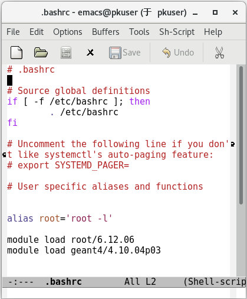

虚拟机¶
我们提供基于 Oracle VM VirtvalBox（https://www.virtualbox.org/） 的虚拟机，用户可自行下载安装。
虚拟机使用¶
关于 VirtvalBox 中的镜像加载问题，请自行百度。
CentOS 7 中，我们对软件采用了多版本的配置。Environment modules 提供了一种设置shell环境（PATH, MANPATH, INCLUDE, LD_LIBRARY_PATH）的方法，通过使用 module 命令，来设置和取消你的路径和环境变量。
记住以下常用命令
module avail #显示可以使用的模块
module load [xxx] #加载 xxx 模块
module unload [xxx] #卸载 xxx 模块
module list #显示已经加载的模块
在命令行中执行以下命令查看当前可加载的软件
module avail
这里以某服务器为例，展示将会看到的信息如下
------------------------ /usr/share/Modules/modulefiles ------------------------
dot module-git module-info modules null use.own
------------------------------- /etc/modulefiles -------------------------------
cmake/3.14.5 geant4/4.10.01p03 geant4/4.9.6p04 root/6.12.06
cmake/3.7.2 geant4/4.10.02p03 mpich-x86_64 root/6.16.00
gcc/4.9.4 geant4/4.10.03p03 python/2.7.16
gcc/7.3.0 geant4/4.10.04p03 python/3.6.9
geant4/4.10.00p04 geant4/4.10.05p01 root/5.34.38
例如你想使用 root5.34.38，则输入以下命令即可加载所需的环境
module load root/5.34.38
当然，每次打开终端都要这样配置也没有必要，可将常用软件版本配置添加在 .bashrc 文件中。
典型配置如下：
